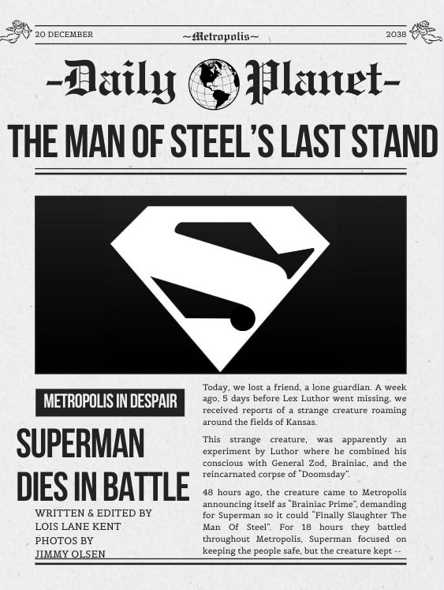

Sobre Nosotros
Nuestra Historia
En PostWatch, nos apasiona el cine y la televisión, y entendemos que una gran historia no termina cuando aparecen los créditos, sino que se queda con nosotros. Somos un equipo de entusiastas del entretenimiento dedicados a conectar a los fans con sus producciones favoritas, ofreciendo las mejores ofertas y una curaduría exclusiva de películas y series. Nuestra misión principal es democratizar el acceso al arte visual, logrando que el entretenimiento sea fácil, asequible y emocionante para todos los niveles de espectadores. Desde nuestros inicios, hemos trabajado arduamente para construir una plataforma robusta y amigable que no solo ofrezca una selección inigualable de títulos y merchandising, sino que también garantice una experiencia de compra excepcional. Creemos que cada usuario merece un servicio personalizado y eficiente, por lo que nos esforzamos día a día en innovar y expandir nuestro catálogo para convertirnos en el destino definitivo para los amantes del séptimo arte.
Nuestra Misión
Creemos firmemente que el cine y la televisión son mucho más que simple entretenimiento; son formas poderosas de contar historias, transmitir valores y tender puentes que conectan a personas de diferentes culturas y realidades. Una gran producción tiene la capacidad de inspirarnos, educarnos y emocionarnos de maneras únicas. Por esta razón, en PostWatch nos esforzamos diariamente por ofrecer una selección de títulos vasta y diversa que abarque todas las épocas, desde los clásicos inmortales que definieron géneros hasta los lanzamientos más recientes y vanguardistas. Nuestro objetivo es eliminar las barreras económicas, garantizando que cada uno de nuestros usuarios pueda disfrutar de sus películas y series favoritas con la mayor calidad posible y sin que el costo sea una preocupación. Trabajamos para que el acceso a la cultura audiovisual sea un derecho compartido y no un privilegio.
Nuestro Compromiso
En PostWatch, nuestra prioridad absoluta son nuestros usuarios. Entendemos que detrás de cada compra hay un fan buscando inmortalizar una historia, y por eso nos comprometemos a brindar un servicio excepcional en cada etapa del proceso. No solo nos dedicamos a la venta; estamos aquí para asesorarte, escucharte y ayudarte a encontrar las mejores ofertas del mercado, asegurándonos de que cada pieza que llegue a tus manos cumpla con los más altos estándares de calidad. Nos esforzamos por crear un entorno seguro, intuitivo y cercano, diseñado para que tu experiencia de navegación y compra sea lo más fluida y agradable posible. Valoramos profundamente la confianza que depositas en nosotros, y trabajamos incansablemente para superar tus expectativas y convertirnos en tu aliado de confianza. Gracias por elegir PostWatch como tu destino de entretenimiento y por permitirnos formar parte de tu pasión por el cine y las series.
Nuestros Servicios
En PostWatch, nos especializamos en ofrecerte una selección meticulosamente curada de pósters de alta calidad, diseñados para capturar la esencia de tus películas y series favoritas y transformarlas en arte para tus espacios. Entendemos que cada fan tiene un gusto único, por lo que contamos con una amplia gama de impresiones en diversos formatos —desde dimensiones estándar hasta medidas de gran formato— y acabados premium que incluyen papel fotográfico de alto gramaje, texturas mate antireflejantes y terminaciones satinadas de gran nitidez. Para garantizar que tu pasión llegue a tus manos sin esperas, disponemos de un sistema de envíos rápidos y seguros con cobertura a todo el país, protegiendo cada pedido para que llegue en perfectas condiciones. Además, nos mantenemos a la vanguardia de la industria: nuestro catálogo se actualiza semanalmente, incorporando de inmediato los últimos estrenos y las tendencias más recientes del mundo del entretenimiento. En PostWatch, no solo vendemos pósters, te brindamos la oportunidad de llevar el cine y la televisión a tu hogar con una calidad profesional.
